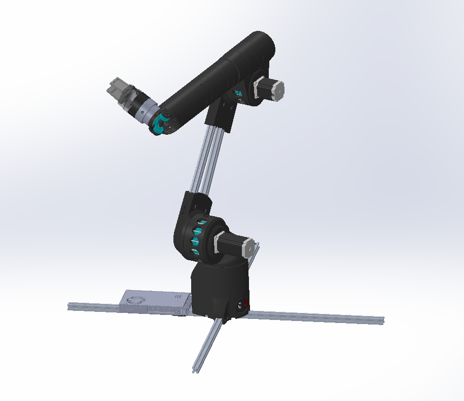
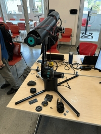
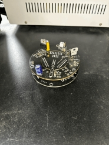
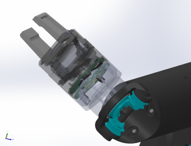
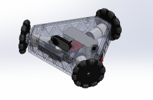
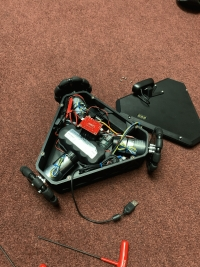
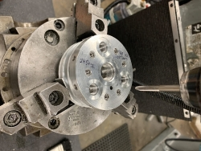

BS-MS Mechanical and Aerospace Engineering
I look forward to proving myself capable to your team.
Engineering Experience
Robotics Engineering Intern - Biomimetic Millisystems Laboratory [7 months]
Research Assistant - Additive Manufacturing and Metamaterials Laboratory [2 months]
Propulsion Engineer - Space Technologies and Rocketry [2.5 years]
Electronics Engineer - Space Enterprise at Berkeley [7 months]
Technical Experience
Architectural Assistant - UC Berkeley Library [1 year]
Course Facilitator - Hands-on PCB Engineering [5 months]
Project Overviews
LYRA - 6 axis Robot Arm
 A one meter long, 7-axis, robot arm with an interchangeable toolhead system. There are over 1000 components in this design.
LITS - Lyra Interchangeable Toolhead System
 A custom PCB for changing out the end effector of the LYRA robot arm for multiple use cases.
Custom Composite - COPV Overwrap

A composite laminate for increased structural rigidity under high internal pressure.
KIWI Bot - Omnidirectional Drone
 KIWI bot is an omnidirectional drone with real-time footage and a remote controller that functions using a tilt-degree mechanism.
Fuel Injector - LE2 Bi-liquid Rocket Engine
Designed and machined the fuel injector for LE2, UC Berkeley's first bi-liquid rocket engine.
Brain Stimulating 7-DoF Robot Arm

This 7-DoF robot arm is made of materials that are nonferromagnetic for use in an MRI machine to stimulate brain activity before a scan. Made mostly of nylon and PEEK, the design is cost-effective and rigid.